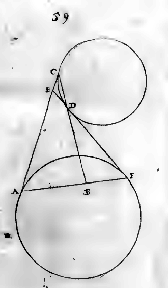

Proposition XVIII: Equal Rectangles on Two Circles Tangent to Two Lines¶


Proposition XVIII · Theorem XVI (p. 53, Tab. 7, Fig. 59)
Let two straight lines AC and FD touch two circles AF and DC, of which FD meets the former at B; and when lines AF and DC are joined, let DC be produced so as to meet AF at E: I say that the rectangle DEA is equal to the rectangle CEF.
Since FE to EA, namely weight A to F, in the figure of the First Element whose weights are F, A, C and center is D, is compounded from the ratios of the weights A to C to D to F, namely of the lines CB to BA, DE to EC, and FB to BD; and as CB is to BA, so BD is to FB; therefore EF to EA will be compounded from the ratios BD to FB, DE to EC, and FB to BD, or from the same taken in perturbed order, namely from the ratios BD to FB to BD, and DE to EC; that is, EF to EA will be as DE to EC: therefore the rectangle contained by the extreme lines EF, EC will equal that made from the means of those four proportionals, Q.E.D.